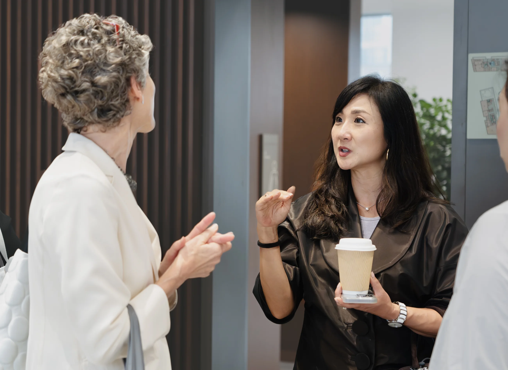
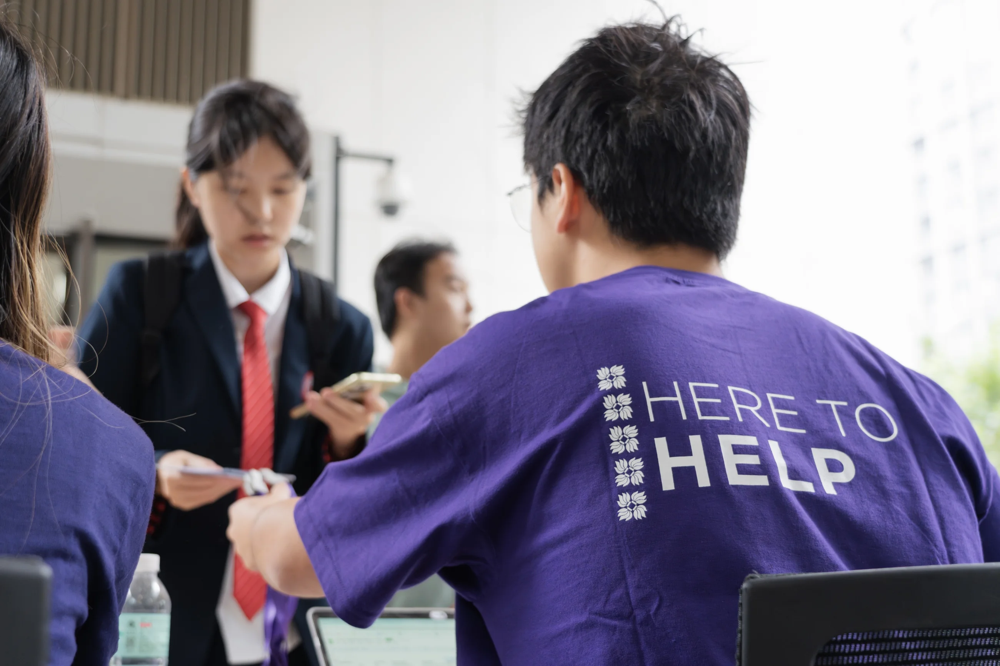
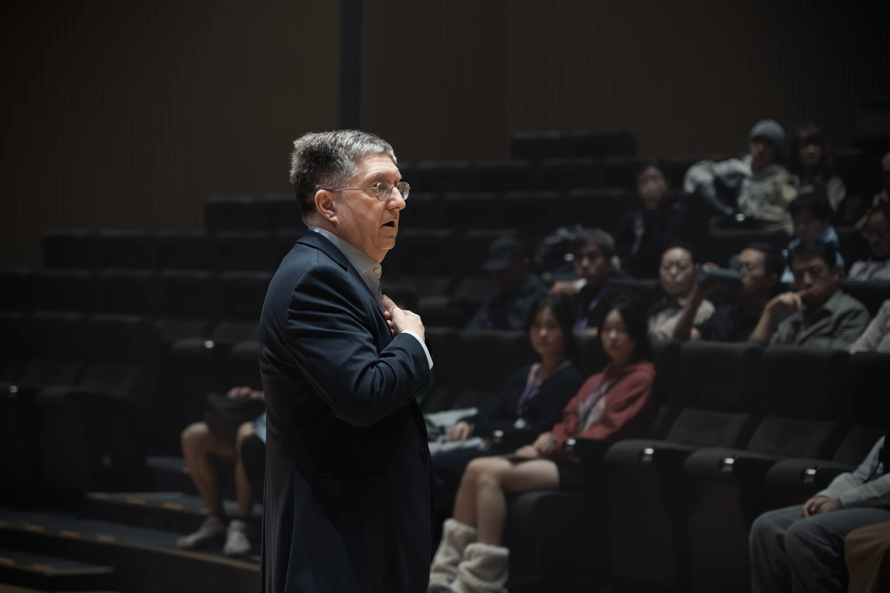
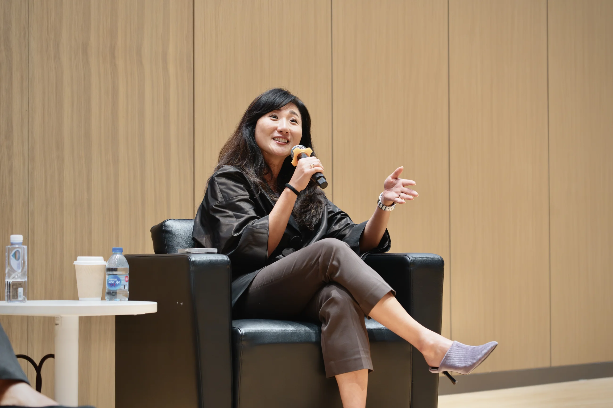
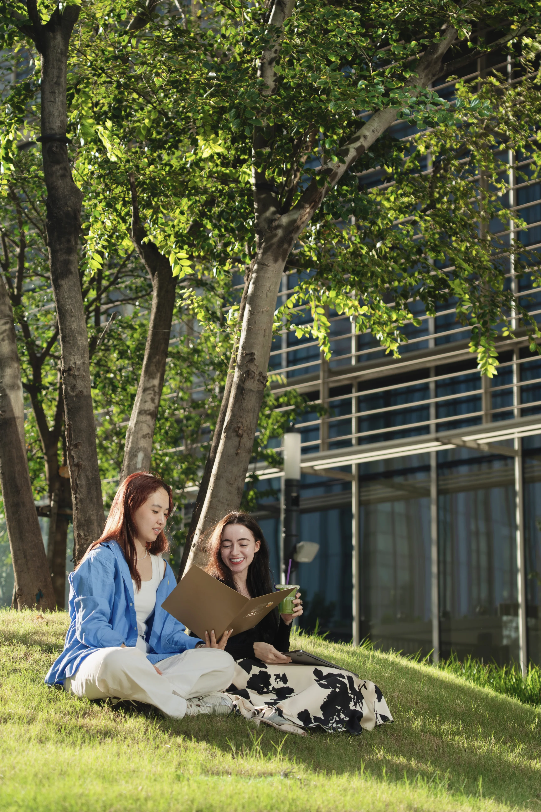
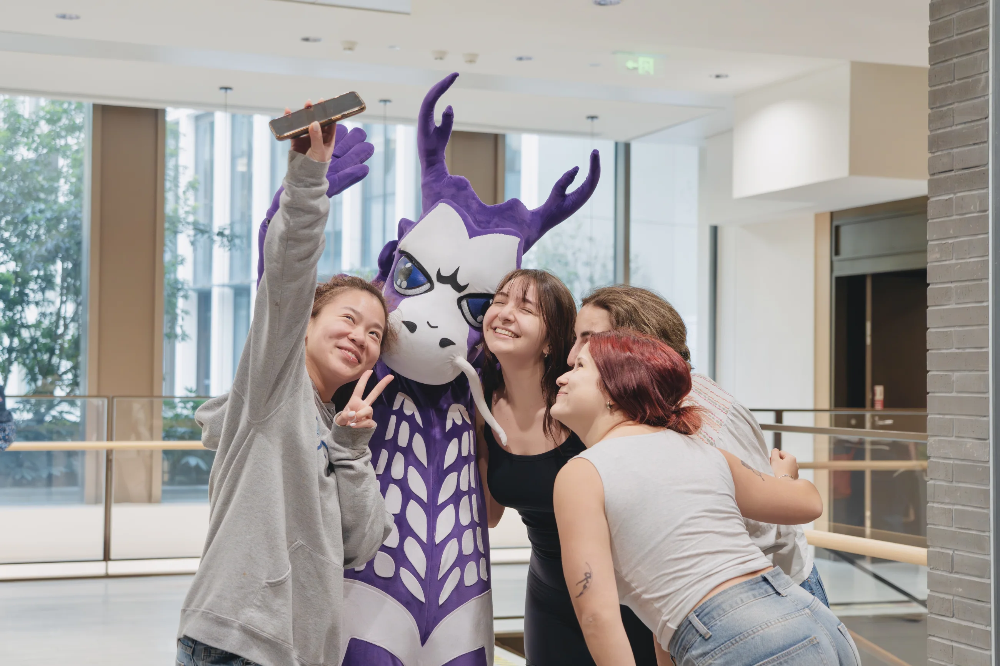

Event Photography
Approach
Event coverage focused on gestures, exchanges, and the atmosphere between formal moments, producing images suitable for editorial, communications, and institutional archives.





